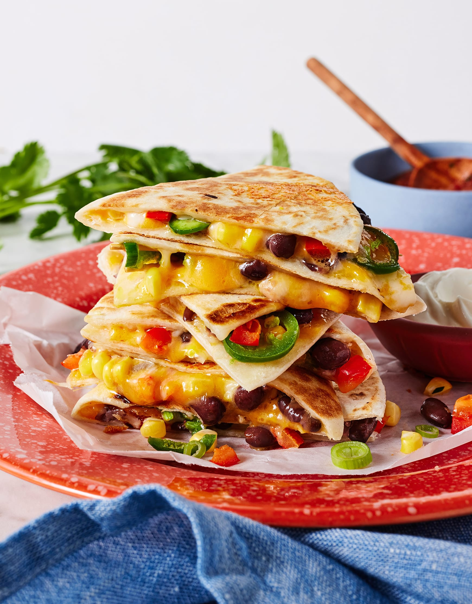

Quesadilla

Description
This chicken quesadilla recipe is great to make for parties.
Zesty chicken, cooked peppers, and melted cheese are a delightful combination.
Cut into wedges and serve with sour cream and salsa.
This cheesy chicken quesadilla recipe features Mexican spices,
colorful veggies, and tons of delicious flavor.
Ingredients
- Chicken
- Seasonings
- Vegetables
- Tortillas
- Cheese
- Bacon
Steps
- Season the chicken, then broil it until it's cooked through.
- Cook the vegetables with the broiled chicken.
- Layer the mixture onto half of the tortilla, then top with cheese and bacon.
- Fold the tortillas and bake until the cheese is melted.
- Cut the quesadillas into wedges.
Home